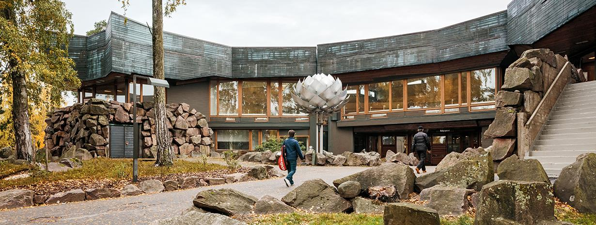

Joint workshop by Alan Turing Institute and Finnish Center for Artificial Intelligence
Espoo, Finland, December 19th and 20th, 2019
Deep models have become the dominant approach of machine learning, yet we still have trouble understanding them and qualitative progress with neural networks has arguably plateaued. Simultaneously, several deep learning paradigms have emerged recently, proposing novel learning frameworks such as deep processes [1], normalizing flows [2], deep generative models [3], Bayesian deep models [4], Riemannian geometries [5], and black box (ordinary/stochastic/partial) differential equations [6,7,8] as learning machines. We find these emerging approaches extremely exciting, and want to bring together both machine learning, and statistics & numerics, and dynamical systems & stochastics researchers to tackle both current and new directions in Helsinki. Attendance is by mostly by invitation.
For any questions contact markus.o.heinonen@aalto.fi
| Thursday (19th Dec) | |
| 08:15 - 08:30 | Samuel Kaski - Opening |
| 08:30 - 09:30 | David Duvenaud - Neural Stochastic Differential Equations for Irregularly-Sampled Time Series |
| 09:30 - 09:45 | George Papamakarios - Neural Spline Flows |
| 09:45 - 10:15 | Coffee |
| 10:15 - 11:00 | Neill Campbell - Learning Alignments and Monotonic Gaussian Process Flows |
| 11:00 - 11:45 | Carl Henrik Ek - Composite Uncertainty in Deep Gaussian Processes |
| 12 - 13 | Lunch |
| 13:00 - 13:45 | Simo Särkkä - Hilbert-Space Reduced-Rank Methods for Deep Gaussian Processes |
| 13:45 - 14:30 | Sören Hauberg - Only Bayes Should Learn a Manifold |
| 14:30 - 14:45 | Gregor Simm - GraphDG: A Generative Model for Molecular Distance Geometry |
| 14:45 - 15:15 | Coffee |
| 15:15 - 16:00 | Mauricio Alvarez - Polynomial Latent Force Models |
| 16:00 - 16:45 | Aki Vehtari - Diagnosing pre-asymptotic behavior of importance sampling and related Monte Carlo expectations |
| 16:45 - 17:15 | Markus Heinonen - Differential deep learning |
| 17:15 | Poster session |
| 19:30 | Dinner |
| Friday (20th Dec) | |
| 08:30 - 09:15 | James Hensman - Translation insensitive convolutional kernels |
| 09:15 - 10:00 | Niklas Wahlström - Deep Learning Applied to System Identification |
| 10:00 - 10:30 | Coffee |
| 10:30 - 11:15 | Andreas Damianou - From GP to deep learning and from deep learning to GP |
| 11:15 - 12:00 | Ole Winther - Flows for quantized data - auto regressive models and variational interpretation |
| 12 - 13 | Lunch |
| 13:00 - 13:45 | Arno Solin - The unholy alliance: Encoding probabilistic priors into deep vision models |
| 13:45 - 14:30 | Jaakko Lehtinen - TBA |
| 14:30 - 15:00 | Coffee |
| 15:00 - 15:15 | Tim Rudner - Inter-domain Deep Gaussian Processes with RKHS Fourier Features |
| 15:15 - 15:30 | ST John - TBA |
| 15:30 - 15:45 | Takuo Matsubara - Quadrature of neural networks based on theridgelet transform, and the possibility of the extension |
The workshop takes place in the Palaver-room at the Dipoli-building at the Otaniemi campus in Espoo. The venue is a five minute walk from the "Aalto University" subway station connecting downtown Helsinki.
Dipoli
Otakaari 24
02150 Espoo, Finland

The conference is jointly organized by: